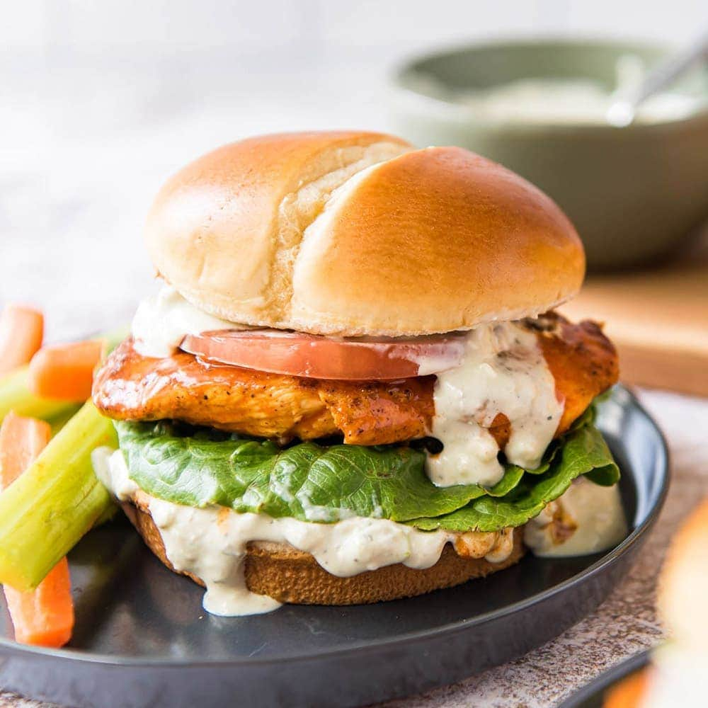

Buffalo Chicken Sandwich

Description
This is a quick and easy meal that you can throw together for dinner.
You can make the slaw a bit ahead of time and it even keeps well in the fridge for leftovers.
There’s a lot of flavor, texture and it’s satisfying too
Ingredients
- 4-6 chicken breasts
- 1 teaspoon smoked paprika
- 1 teaspoon garlic powder
- salt and pepper
- 1/2 cup hotsauce (like frank's red hot)
- 3 tablespoons unsalted butter
- brioche buns, for serving
- ranch for serving
Steps
- Preheat your grill to the highest setting.
- For the chicken, I like to use thin sliced breasts because I think they are easier to eat on a sandwich. I usually buy chicken breasts and slice them in half lengthwise.
- Season the chicken breasts all over with a pinch of salt, pepper and the smoked paprika and garlic powder.
- Heat a small saucepan over medium heat and place the hot sauce and butter in it. Cook just until the butter melts, stirring often. You can also do this in the microwave!
- You want the grill heat between 400 and 450 degrees, so reduce the heat slightly if needed. Place the chicken on the grill. Grill for 4 minutes, then flip and grill for 3 minutes more. Brush the chicken with the buffalo wing sauce. Flip, brush the other side, and grill for another minute. You can do this 1 or 2 more times, you want the internal temperature to be 165 degrees F. It may take more or less time based on the thickness of your chicken breast! You can also throw the buns on the grill for 1 to 2 minutes if you’d like.
- When the chicken is done, remove it from the grill and brush it with more of the buffalo sauce.
- To serve, if desired you can add a little bit of blue cheese dressing or ranch on the bottom of the bun. Top with the chicken breast (or 2, if you’re my husband), then top with the slaw. You can add an extra sprinkle of gorgonzola too! Eat immediately. Yum.